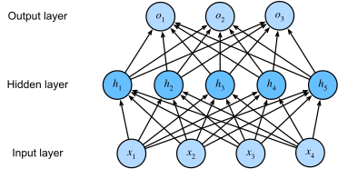
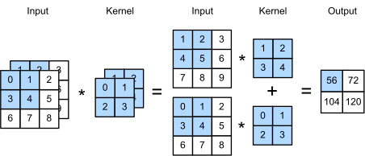
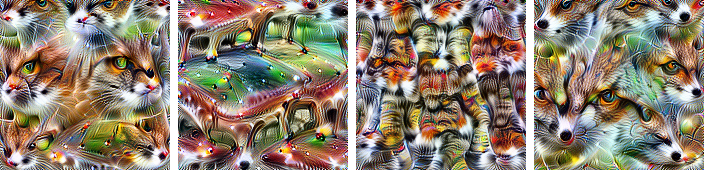
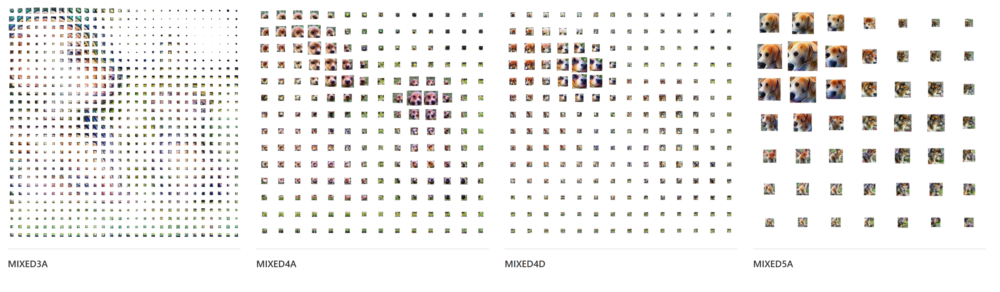
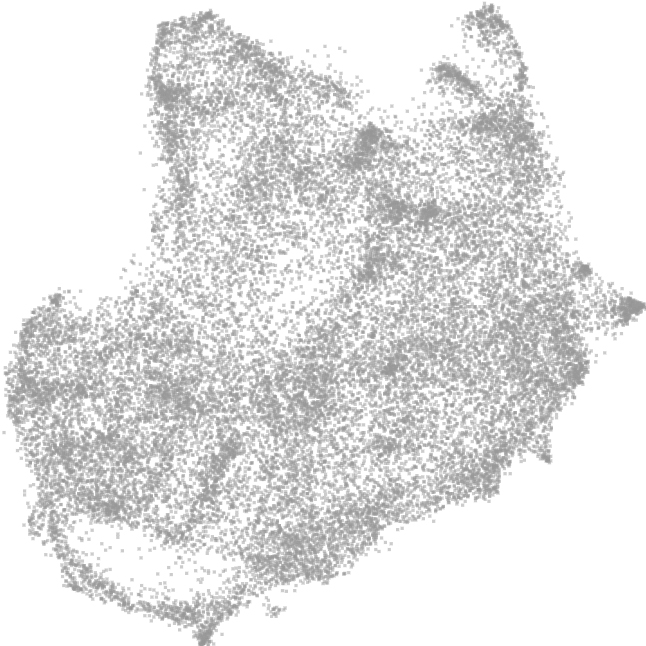
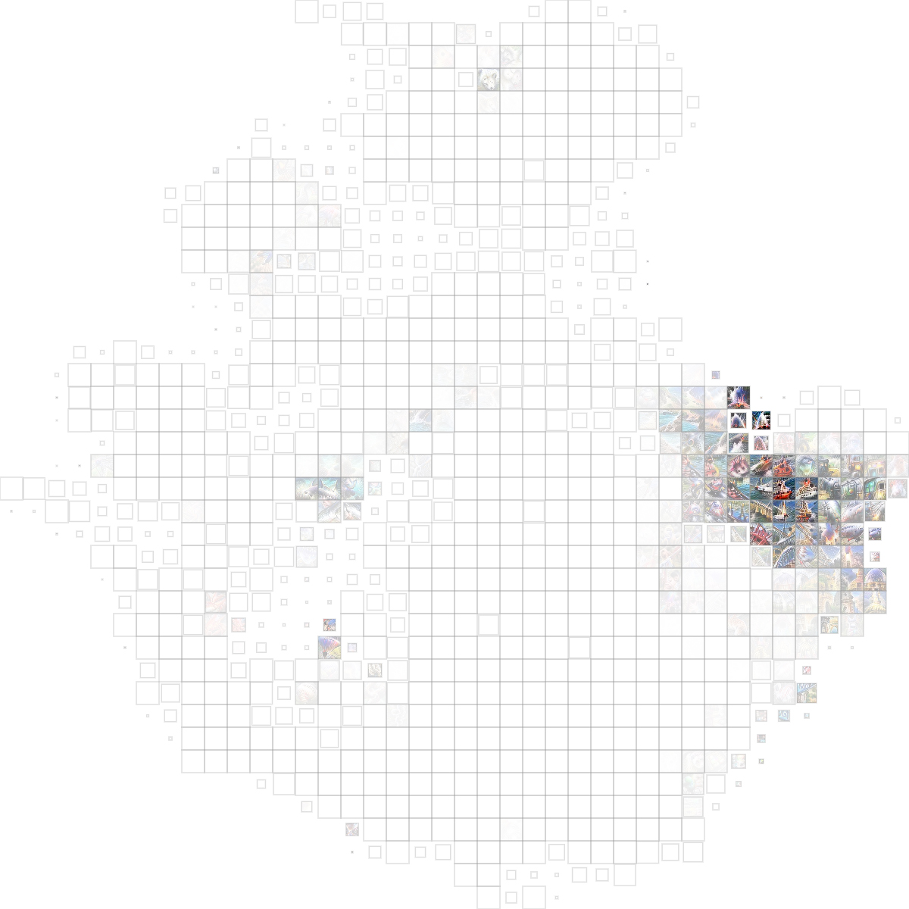
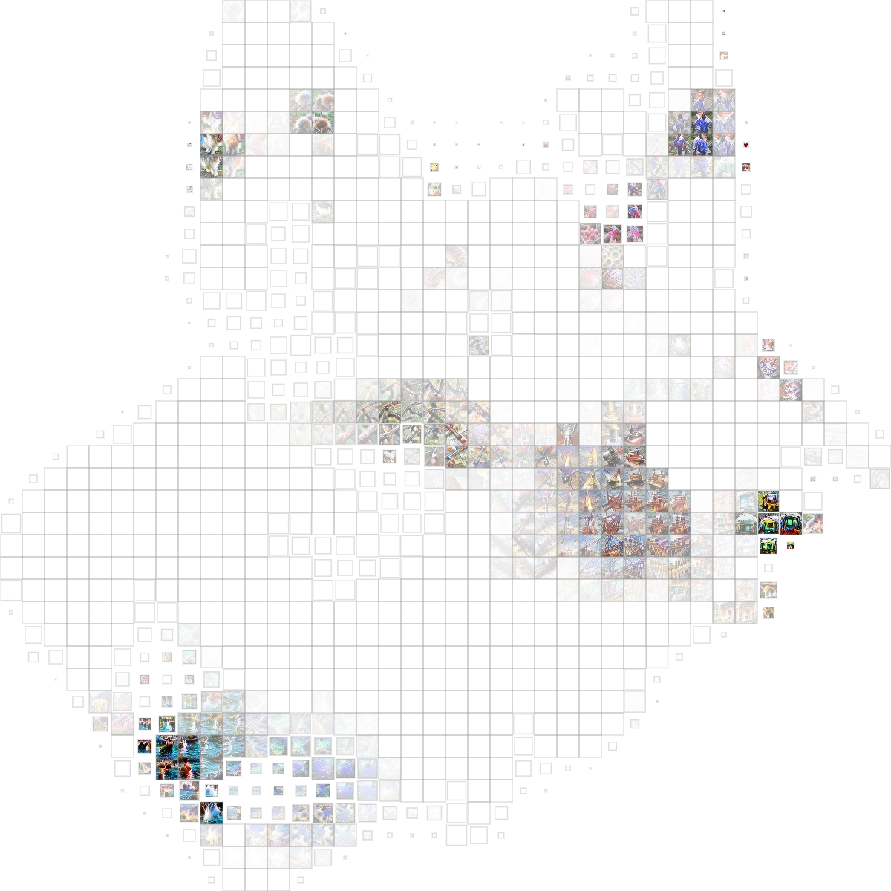

歸因
近來的研究指出很多歸因技術不可靠。
CNN 怎麼看圖
上一頁說 CNN 含有卷積層；全連接層處理影像時參數太多。

對應圖 A1000×1000 的影像接到同樣大小的下一層，一層就要這麼多參數。
同一塊圖案不管出現在影像的哪裡，都要有相似的反應。
只看局部區域，不管影像遠處的內容；看的範圍 Δ 通常小於 10。
重點加上平移不變性和局部性兩個限制，一層的參數從 10¹² 降到 4Δ²。
資料來源：Wiki〈卷積層〉〈平移不變性〉〈局部性〉〈神經網路基礎〉〈名詞表〉｜圖：Zhang et al., Dive into Deep Learning, Sections 1.1–1.2, 2.4, 3.1 and 5.1 (2023), CC BY-SA 4.0
CNN 怎麼看圖
上一頁推出卷積層；卷積層會把輸入和卷積核做卷積運算。
輸入
卷積核
輸出
卷積核 [1, −1]：相鄰的值相同時輸出 0；白到黑輸出 1，黑到白輸出 −1。
輸出重點窗口滑過輸入，每個位置把對應的值相乘再加總；卷積核 [1, −1] 就能偵測垂直邊緣。
CNN 怎麼看圖
算完卷積運算後，卷積層的輸出叫特徵圖；Building Blocks 把每一層學到的表示畫成三維的立方體。

x、y 軸：影像上的位置z 軸：通道
重點一層的輸出叫特徵圖；x、y 軸是影像上的位置，z 軸是通道。
資料來源：Wiki〈特徵圖〉〈卷積運算〉〈通道〉〈名詞表〉｜圖：Zhang et al., Dive into Deep Learning, Chapter 7 (Sections 7.1–7.5) (2023), CC BY-SA 4.0
CNN 怎麼看圖
看完單層特徵圖後，接著看哪些前層元素可能影響某一層某個元素的計算結果。
重點網路越深，感受野越大；步幅和池化可以用來降採樣。
資料來源：Wiki〈感受野〉〈填充與步幅〉〈池化〉〈感受野的計算〉〈名詞表〉｜圖：Araujo et al., Computing Receptive Fields of Convolutional Neural Networks (2019), CC BY 4.0，經裁切
一個神經元
基礎篇結束；接著用特徵視覺化產生範例，看網路的某一部分在找什麼。
重點從雜訊出發，依導數一步步調整影像，得到一張讓目標反應很強的影像。
資料來源：Wiki〈特徵視覺化〉〈特徵視覺化〉〈訓練與梯度下降〉〈名詞表〉〈逐層抽象〉｜圖：Olah et al., Feature Visualization (2017), CC BY 4.0，經裁切
一個神經元
上一頁提到最佳化；但不加限制的最佳化會得到雜訊和高頻圖樣。
重點不加限制的最佳化會得到雜訊和高頻圖樣，要用正則化或限制加上比較自然的結構。
資料來源：Wiki〈正則化與預條件〉〈名詞表〉｜圖：Olah et al., Feature Visualization (2017), CC BY 4.0，經裁切
一個神經元
用最佳化畫出 GoogLeNet 各層的通道後，接著看由低到高各層依序像什麼。
重點GoogLeNet 由低到高，各層的通道依序像邊緣、紋理、圖案、部件、物體。
資料來源：Wiki〈逐層抽象〉〈通道〉〈名詞表〉｜圖：Olah et al., Feature Visualization (2017), CC BY 4.0，經裁切
一個神經元
看過各層像什麼後，但最佳化通常只給一個極端的正例，可能只呈現特徵的一個面向。

重點不一定；有些是多義神經元，同時回應幾種顯著概念，例如貓和車。
資料來源：Wiki〈特徵視覺化〉〈語意字典〉〈激活空間〉｜圖：Olah et al., Feature Visualization (2017), CC BY 4.0
一張圖
前面看單一神經元；換成輸入一張影像，取每個元素的激活向量照位置排成網格。

重點把每個元素的激活向量畫出來排成網格，就能看到網路在每個位置偵測到什麼。
資料來源：Wiki〈激活網格〉｜圖：Olah et al., The Building Blocks of Interpretability (2018), CC BY 4.0
一整層
前面只看得到網路怎麼看一張影像，看不到全貌；激活圖譜從一百萬張影像取樣，看一層的概念全貌。

重點激活圖譜取樣一百萬個激活向量，降到二維、分格平均再畫出來，看一層能表示的概念全貌。
資料來源：Wiki〈用激活圖譜探索神經網路〉〈激活圖譜〉〈名詞表〉｜圖：Carter et al., Exploring Neural Networks with Activation Atlases (2019), CC BY 4.0
一整層
做出激活圖譜後，依對某個類別的貢獻調不透明度，看 mixed5b 和 mixed4d 的激活圖譜。


重點同一個類別，不同層用不同的東西判斷。
資料來源：Wiki〈激活圖譜〉〈逐層抽象〉｜圖：Carter et al., Exploring Neural Networks with Activation Atlases (2019), CC BY 4.0
能信多少
前面看了特徵視覺化、歸因這些可解釋性方法和激活圖譜；最後來檢視這些方法。
近來的研究指出很多歸因技術不可靠。
正則化越強，例子越逼真，但越可能出現誤導的相關。
只能顯示取樣到的激活值；資料要來自我們關心的分布，樣本也要夠多。
作者認為可信的關鍵標誌是介面不會誤導：使用者看了介面明確顯示的資訊後，不應該對模型得出錯誤的判斷。
重點特徵視覺化本身永遠不會帶來完全令人滿意的理解，要和其他工具結合。
資料來源：Wiki〈可解釋性的組成元件〉〈用激活圖譜探索神經網路〉〈特徵視覺化〉